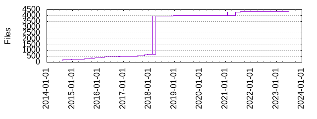

Files
- Total files
- 4345
- Total lines
- 458333
- Average file size
- 15267.66 bytes

| Extension | Files (%) | Lines (%) | Lines/file |
|---|
| 57 (1.31%) | 1857 (0.41%) | 32 |
| TEMPLATE | 3 (0.07%) | 69 (0.02%) | 23 |
| bazel | 1 (0.02%) | 12 (0.00%) | 12 |
| bin | 3 (0.07%) | 0 (0.00%) | 0 |
| bzl | 2 (0.05%) | 62 (0.01%) | 31 |
| c | 7 (0.16%) | 7082 (1.55%) | 1011 |
| cc | 1 (0.02%) | 9 (0.00%) | 9 |
| cmake | 24 (0.55%) | 5455 (1.19%) | 227 |
| cpp | 123 (2.83%) | 45865 (10.01%) | 372 |
| css | 7 (0.16%) | 1102 (0.24%) | 157 |
| eot | 188 (4.33%) | 40180 (8.77%) | 213 |
| file1 | 3 (0.07%) | 3 (0.00%) | 1 |
| file2 | 3 (0.07%) | 3 (0.00%) | 1 |
| gdb | 4 (0.09%) | 13 (0.00%) | 3 |
| gif | 1 (0.02%) | 0 (0.00%) | 0 |
| golang | 17 (0.39%) | 348 (0.08%) | 20 |
| golden | 194 (4.46%) | 4500 (0.98%) | 23 |
| h | 27 (0.62%) | 6026 (1.31%) | 223 |
| hpp | 72 (1.66%) | 41724 (9.10%) | 579 |
| html | 54 (1.24%) | 13658 (2.98%) | 252 |
| i | 1 (0.02%) | 536 (0.12%) | 536 |
| in | 6 (0.14%) | 5157 (1.13%) | 859 |
| inc | 1 (0.02%) | 34 (0.01%) | 34 |
| java | 5 (0.12%) | 246 (0.05%) | 49 |
| jpg | 2 (0.05%) | 119 (0.03%) | 59 |
| js | 2599 (59.82%) | 274753 (59.95%) | 105 |
| json | 7 (0.16%) | 1059 (0.23%) | 151 |
| jsonnet | 243 (5.59%) | 21238 (4.63%) | 87 |
| libsonnet | 40 (0.92%) | 2966 (0.65%) | 74 |
| list | 1 (0.02%) | 2 (0.00%) | 2 |
| md | 25 (0.58%) | 3715 (0.81%) | 148 |
| mp3 | 2 (0.05%) | 30 (0.01%) | 15 |
| natvis | 2 (0.05%) | 295 (0.06%) | 147 |
| ogg | 2 (0.05%) | 36 (0.01%) | 18 |
| old | 6 (0.14%) | 682 (0.15%) | 113 |
| otf | 189 (4.35%) | 38847 (8.48%) | 205 |
| out | 1 (0.02%) | 2 (0.00%) | 2 |
| png | 11 (0.25%) | 1140 (0.25%) | 103 |
| prof | 1 (0.02%) | 59 (0.01%) | 59 |
| py | 25 (0.58%) | 3957 (0.86%) | 158 |
| rc | 1 (0.02%) | 291 (0.06%) | 291 |
| sh | 26 (0.60%) | 2257 (0.49%) | 86 |
| sln | 1 (0.02%) | 41 (0.01%) | 41 |
| source | 2 (0.05%) | 280 (0.06%) | 140 |
| stderr | 22 (0.51%) | 204 (0.04%) | 9 |
| stdin | 2 (0.05%) | 10 (0.00%) | 5 |
| stdout | 43 (0.99%) | 140 (0.03%) | 3 |
| stream | 1 (0.02%) | 7 (0.00%) | 7 |
| svg | 28 (0.64%) | 7826 (1.71%) | 279 |
| toml | 1 (0.02%) | 50 (0.01%) | 50 |
| txt | 43 (0.99%) | 1834 (0.40%) | 42 |
| vcxproj | 2 (0.05%) | 326 (0.07%) | 163 |
| woff | 187 (4.30%) | 12824 (2.80%) | 68 |
| yaml | 4 (0.09%) | 98 (0.02%) | 24 |
| yml | 22 (0.51%) | 2463 (0.54%) | 111 |